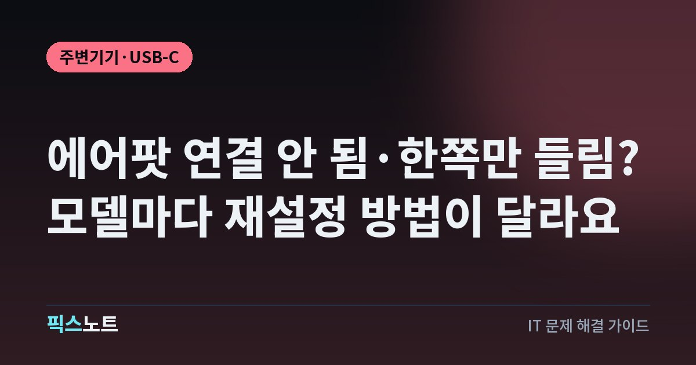

에어팟 연결 안 됨·한쪽만 들림? 모델마다 재설정 방법이 달라요
에어팟이 연결되지 않거나 한쪽만 들릴 때 Apple 공식 순서로 점검하고 모델별로 재설정하는 법이에요.

에어팟이 갑자기 연결이 안 되거나 한쪽에서만 소리가 나면, 일단 케이스 뒤 버튼부터 꾹 누르게 되죠. 그런데 AirPods 4, AirPods 5, AirPods Pro 3는 뒤에 버튼을 누르는 게 아니라 케이스 앞면을 두 번 탭하는 방식이에요. 모델에 맞지 않는 방법으로 아무리 눌러도 재설정이 안 돼요. 재설정 전에 먼저 해 볼 것부터 모델별 방법까지 Apple 안내대로 정리했어요.
결론부터: 재설정은 마지막, 15초 리셋이 먼저예요
에어팟 문제는 대부분 연결이 잠깐 꼬인 경우라, 재설정까지 가기 전에 풀리는 일이 많아요. Apple도 재설정은 맨 마지막 단계로 안내해요.
순서는 이렇게 가요.
- 아이폰과 에어팟의 기본 상태 확인(업데이트, 충전, 블루투스)
- 덮개를 닫고 15초 기다렸다 열기
- 다시 페어링하기
- 그래도 안 되면 재설정
연결이 안 될 때: 기본 점검 순서
Apple이 안내하는 연결 문제 해결 순서예요.
- 아이폰이나 아이패드를 최신 iOS·iPadOS로, 맥은 최신 macOS로 업데이트해요.
- 에어팟 양쪽을 충전 케이스에 넣고 양쪽 모두 충전되는지 확인해요.
- 블루투스가 켜져 있는지 봐요. 아이폰은 설정 > Bluetooth, 맥은 Apple 메뉴 > 시스템 설정 > Bluetooth예요.
- 케이스에서 에어팟을 꺼내 귀에 꽂아요.
- 제어 센터를 열고 AirPlay 버튼을 눌러요. 목록에 에어팟이 보이면 고른 뒤 음악을 틀어 봐요. 기기 음량이 충분히 높은지도 확인해요.
- 목록에 없거나 보여도 연결되지 않으면 양쪽을 케이스에 넣고 덮개를 닫아요. 15초 기다린 뒤 덮개를 열어요.
다시 페어링하기: 모델별 방법
15초 리셋으로도 안 되면 다시 페어링해요. 맥이라면 맥에서 수동으로 페어링하고, 아이폰이나 아이패드라면 모델에 따라 이렇게 해요.
- AirPods 4(두 모델 모두), AirPods 5(두 모델 모두), AirPods Pro 3: 상태 표시등이 흰색으로 깜박일 때까지 케이스 앞면을 두 번 탭해요.
- 그 밖의 모든 모델: 상태 표시등이 흰색으로 깜박일 때까지 케이스 뒷면의 설정 버튼을 길게 눌러요.
- 에어팟을 케이스에 넣고 덮개를 연 채로 아이폰 옆에 둬요.
- 아이폰 화면에 나오는 단계를 따라가요.
한쪽만 안 들릴 때: 충전부터 확인
왼쪽이나 오른쪽 한쪽만 안 될 때는 그쪽 배터리가 비어 있는 경우가 많아요. Apple 안내 순서예요.
- 충전 케이스가 완전히 충전돼 있는지 확인해요. 케이스가 충전되지 않으면 케이스 충전 포트를 청소해요.
- 양쪽 에어팟을 케이스에 넣고 30초 동안 충전해요.
- 아이폰 근처에서 케이스를 열고, 아이폰 화면에서 양쪽이 각각 충전되고 있는지 봐요.
- 안 되는 쪽 하나만 해당하는 귀에 꽂고, 다른 쪽은 케이스에 넣고 덮개를 닫아요.
- 아이폰에 연결된 걸 확인하고 음악을 틀어 봐요.
- 소리가 나면 양쪽을 다시 케이스에 넣고 30초 충전한 뒤, 아이폰 근처에서 열고 양쪽을 함께 테스트해요.
그래도 한쪽이 안 되면 재설정으로 넘어가요.
한쪽 소리만 작을 때: 이물질과 밸런스
소리는 나는데 한쪽만 유독 작다면 고장보다 이물질이나 설정 문제일 가능성이 커요.
- 이어팁이 있는 모델은 이어팁을 빼고, 각 에어팟의 마이크와 스피커 망을 살펴봐요.
- 귀지나 먼지 같은 이물질이 보이면 Apple 안내에 따라 청소해요.
- 아이폰의 설정 앱에서 ‘손쉬운 사용’을 탭해요.
- ‘오디오 및 시각 효과’를 탭하고 ‘밸런스’까지 내려가요.
- 밸런스 슬라이더가 가운데에 있는지 확인해요.
재설정 방법 ①: 뒷면 설정 버튼이 있는 모델
AirPods 1, AirPods 2, AirPods 3, AirPods Pro 1, AirPods Pro 2처럼 케이스 뒷면에 설정 버튼이 있는 모델은 이렇게 재설정해요.
- 에어팟을 케이스에 넣고 덮개를 닫은 뒤 30초 기다려요.
- 아이폰에서 설정 > Bluetooth로 들어가요.
- 나의 기기 목록에 에어팟이 있으면 옆의 추가 정보 버튼을 누르고 ‘이 기기 지우기’를 탭한 뒤 한 번 더 탭해 확인해요.
- 케이스 덮개를 열어요.
- 케이스 뒷면의 설정 버튼을 약 15초 동안 길게 눌러요.
- 앞면의 상태 표시등이 황색으로 깜박이다가 흰색으로 깜박이면, 화면 안내에 따라 다시 연결해요.
재설정 방법 ②: AirPods 4·5, AirPods Pro 3
케이스 앞면을 탭하는 모델은 재설정 방법이 달라요. 버튼을 찾지 말고 탭 횟수를 기억하세요.
- 에어팟을 케이스에 넣고 덮개를 닫은 뒤 30초 기다려요.
- 아이폰에서 설정 > Bluetooth로 들어가 에어팟 옆 추가 정보 버튼을 누르고 ‘이 기기 지우기’를 두 번 탭해 확인해요.
- 케이스 덮개를 열어요.
- 상태 표시등이 켜져 있을 때 케이스 앞면을 두 번 탭해요.
- 표시등이 흰색으로 깜박이면 다시 두 번 탭해요.
- 표시등이 빠르게 깜박이면 세 번째로 두 번 탭해요.
- 표시등이 황색으로 깜박이다가 흰색으로 깜박이면, 화면 안내에 따라 다시 연결해요.
그래도 연결되지 않거나 한쪽이 계속 안 된다면 Apple 지원이나 공인 서비스센터에서 점검을 받으세요.
자주 묻는 질문
에어팟이 아이폰에 연결이 안 돼요. 제일 먼저 뭘 해야 하나요?
양쪽을 케이스에 넣고 덮개를 닫은 뒤 15초 기다렸다가 여는 게 가장 먼저예요. 그 전에 아이폰 업데이트, 양쪽 충전, 블루투스가 켜져 있는지도 함께 확인하세요.
AirPods Pro 3는 재설정 버튼이 어디 있나요?
AirPods Pro 3와 AirPods 4·5는 뒷면 버튼 대신 케이스 앞면을 탭해요. 표시등이 켜진 상태에서 두 번 탭하고, 흰색으로 깜박이면 다시 두 번, 빠르게 깜박이면 세 번째로 두 번 탭하면 재설정돼요.
한쪽 에어팟만 소리가 작아요.
이어팁을 빼고 마이크와 스피커 망에 이물질이 있는지 확인해 청소하세요. 그다음 설정 > 손쉬운 사용 > 오디오 및 시각 효과에서 ‘밸런스’ 슬라이더가 가운데인지 확인하세요.
재설정하면 뭐가 지워지나요?
아이폰과의 연결 정보가 지워져서 처음 연결할 때처럼 다시 페어링해야 해요. 그래서 Apple도 재설정 전에 아이폰 Bluetooth 설정에서 ‘이 기기 지우기’를 먼저 하라고 안내해요.